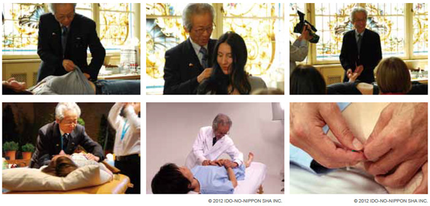

相关证明

Shudo, Denmei
L.Ac.
Served 1 term (2yrs) as vice-chairman of the All Japan Acupuncture Association
任职一期（两年）担任日本针灸协会副会长
Served as the chairman of the Traditional Acupuncture Society for 8 years
担任传统针灸医学会主席八年。
My treatment style is as follows: I decide the pattern and then I do the root treatment followed by the branch (symptomatic) treatment. After the acupuncture, the patient gets direct moxibustion on 5 to 10 points. Patients come in once a week on an average. If possible I instruct patients to do moxibustion at home. When they can’t do moxibustion, then it’s time for 新的Pyonex. I place 新的Pyonex on the moxibustion points for symptom control. 我个人的治疗方式如下：我先定下一种模式，然后我根据分支（症状）治疗做根治疗。在针灸之后，患者直接进行5-10个穴位的艾灸。患者平均每周来一次。 如果可以的话，我建议病人可以自己在家里做艾灸。若病人无法做艾灸的话，就可以试试用新的Pyonex针。我将新的Pyonex针放置在艾灸穴位上做症状控制。
How I use 新的Pyonex 我如何使用Pyonex针
- Little children with colic: Often GB-21 is extremely tight, especially on the left. Children don’t complain about such things, but they must be under a lot of stress. 新的Pyonex can be attached without the child crying. 时常会有腹绞痛的小孩：常常GB-21穴会出现极度收紧状态，尤其式在左边的位置。小孩不会诉苦这件事，但是他们一定很难受。新的Pyonex针可以 贴在小孩身上，小孩甚至都不会哭闹。
- For dizziness, LR-1 and the auricular vertigo point work especially well. The conventional intradermal needles are good for the auricular point, but 新的Pyonex can be used instead. 新的Pyonex can be used on LR-1 also. I have patients press the points gently three times a day. 对于一些头脑晕眩，LR-1穴和耳眩晕穴作用效果特别好。传统的皮下针对耳穴也很有好处，但新的Pyonex完全可以取而代之。新的Pyonex也可以被用在 LR-1穴上。我有的凭人每天轻轻按压这个穴位三次。
- For coughing and chest pains I often use the axillary point. Especially for children, I press quickly to find the point and put 新的Pyonex on instantly. 对于咳嗽和胸口疼痛，我经常按压腋窝穴，尤其是小朋友，通过快速找到穴位并立即将新的Pyonex针放置在上面。
- For joint pain I put 新的Pyonex on the most reactive points. Keep these points to a minimum. The important thing is to accurately locate the reactive points. 对于关节疼痛，我将新的Pyonex放置在大多数活性穴位。保持这种穴位最小啊户。关键点在于要精准的放置在这些活性穴位上面。
Advice in using 新的Pyonex 在使用新的Pyonex的一些建议
Since they are painless and so simple to use, they can be overused. Overuse leads to loss of effect. To prevent this, select just a few points. One must employ a professional view and touch to find those points that work. Novices can use 新的Pyonex, but experts use them better. 由于它的无痛和操作方便的特性，Pyonex针能够被广泛使用。广泛使用也会导致不能百分比产生效果。为了避免这样的情况发生，只需要选择几个穴位足以。 必须要用专业的视角和触摸去找到那些起作用的穴位。新手完全可以使用新的Pyonex针，但专家可能会更好地使用它。
